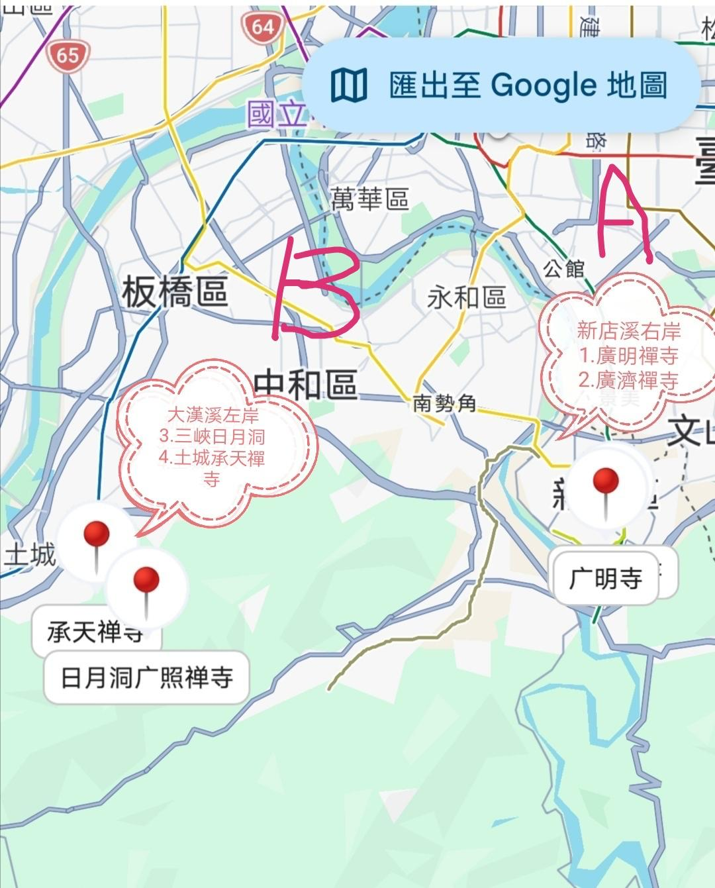

單元：獅頭山
獅頭是火山 天機活潑
從新店捷運站出發，沿大坪林圳觀察點、中興路、廣明禪寺、廣照禪寺、檳榔路昆塞特小屋到振山煤礦與檳榔坑溪，走讀山林、礦業與寺院信仰記憶。
-

新店小獅頭山走讀
2026年9月24日，我們從新店捷運站出發，走進小獅頭山。一路上，從水圳、寺院、老聚落，到昆塞特小屋與煤礦遺跡，看見新店不同時代留下的生活痕跡。這不只是一趟爬山行程，更像是沿著街道讀一段地方歷史。
-

獅山腰的大佛
記得十數年前，只要從新店碧潭一帶向東方山林望去，總能看見矗立於小獅山山壁之上的阿彌陀佛大佛像。那尊大佛曾是獅山崖壁醒目的地標，靜靜看著西方，守望著新店。
-
廣明禪寺
廣欽老和尚落腳新店的第一個修行洞窟；依山勢修建了廣明寺；其後，又在不遠處尋著第二個修行石窟，並循山壁雕鑿寶相莊嚴的大佛；遙想當年大佛所在，視野遼闊，佛光普照山川大地~如今，大佛傍著廣照寺，慈暉普濟眾生~
-

檳榔坑溪
2026.09.24｜從大坪林圳到檳榔坑溪，尋找河流與城市的記憶
-

廣欽老和尚修行路
首先要感謝高淑華老師帶領參訪廣明寺和廣濟禪寺。好奇心起，想借重Google Map的協助，拼圖廣欽老和尚修行的弘法足跡。